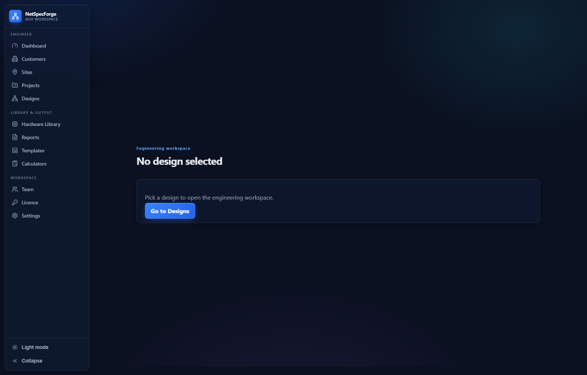
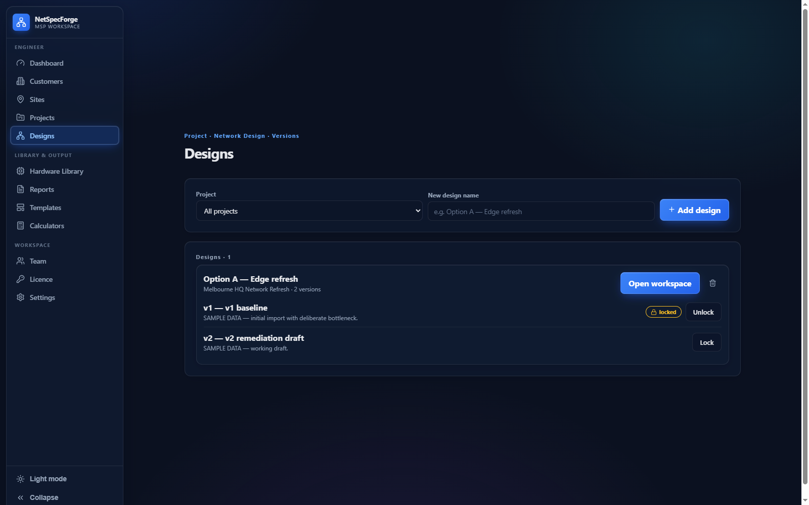
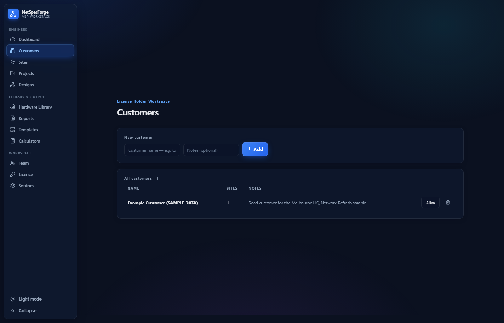
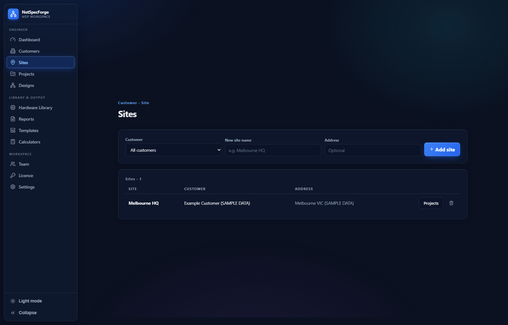
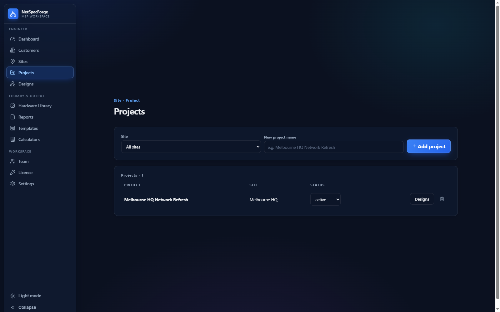
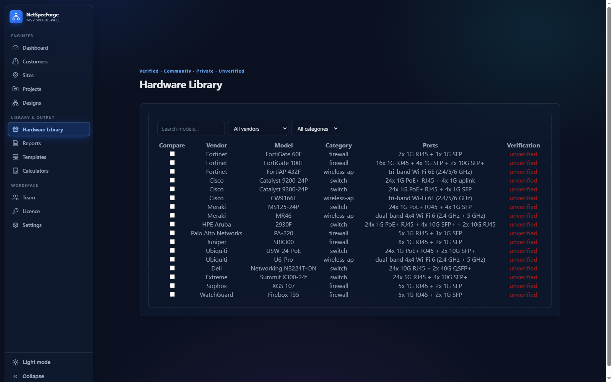
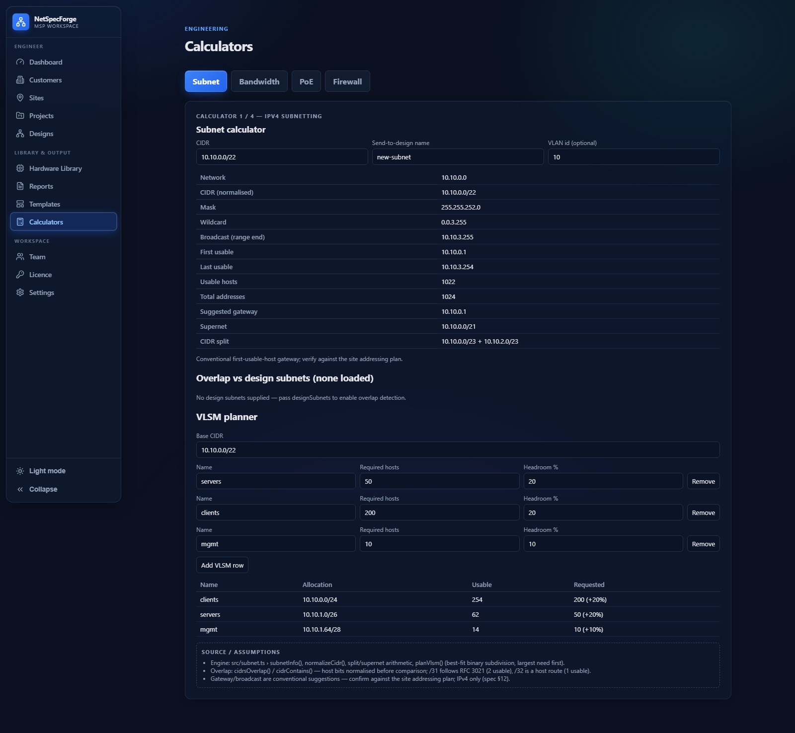
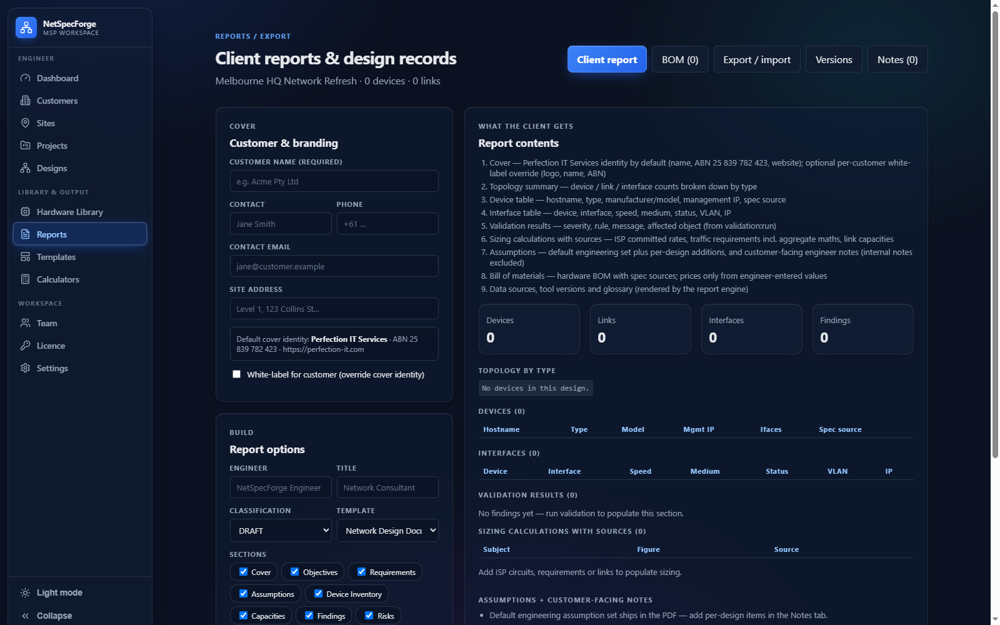
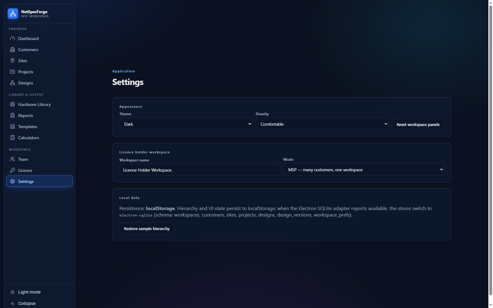

Create a project
Open NetSpecForge, select New Project, enter a name and choose a template (Enterprise, Campus, or Datacenter).
Learn how to design, size and validate with NetSpecForge.
Create a project, add devices, and build your topology.
Open NetSpecForge, select New Project, enter a name and choose a template (Enterprise, Campus, or Datacenter).
Drag switches, routers, firewalls, and access points from the device library onto the canvas. Set VLANs, ports, and PoE requirements per device.
Connect devices with links. Assign link speeds (1G, 10G, 25G, 100G), then run the topology checker to validate cabling and addressing.





Run the built-in NET-001..020 rule set against your topology.
Select Validate from the toolbar or press Ctrl+R. Choose the rule pack (default: NET-001..020).
Click Run. NetSpecForge checks addressing, VLAN consistency, spanning-tree, PoE budget, bandwidth headroom, and firewall policy.
Each finding shows severity, rule ID, affected device, and a suggested fix. Filter by Pass / Warn / Fail or jump to a device on the canvas.

Subnet, bandwidth, PoE, and firewall sizing tools.
Enter a network and required host counts per subnet. Get optimal block allocation, wasted addresses, and summarization.
Model per-link utilisation and headroom. Detect bottlenecks and oversubscribed links before they affect production.
Calculate power per switch port with redundancy margins. See headroom and overload warnings per device.
Right-size appliances from policy count, traffic model, and growth margin. Outputs recommended model and rule capacity.

Generate audit-ready PDF reports and export SVG diagrams.
Open Reports, select PDF, choose sections (topology, validation findings, calculator outputs), then click Export.
Select SVG to export a vector diagram. Crisp at any scale, suitable for architecture docs and design reviews.
Use the CLI to generate reports on a schedule or as part of a CI pipeline.

Activate a license key to unlock Pro or Enterprise features.
Purchase a license at the licensing portal and copy your activation key from the order confirmation email.
In NetSpecForge go to Settings > License or click Activate License on the welcome screen.
Paste the key and click Activate. The product verifies the key online and unlocks your entitled tier.

Common issues and fixes.
| Issue | Fix |
|---|---|
| Validation rules not running | Ensure a topology exists and devices have IP/VLAN config. Run Auto-address first. |
| PDF export fails | Check you have write permission to the output folder, or reduce report sections and retry. |
| License key rejected | Verify the key matches your purchased tier and has not been activated on another machine. Deactivate elsewhere first. |
| PoE over-budget warning | Reduce PoE device count, add a higher-capacity switch, or enable redundant power supplies for headroom. |
| Link shows as down | Confirm link speed/duplex match on both ends and that the cable type supports the distance. |